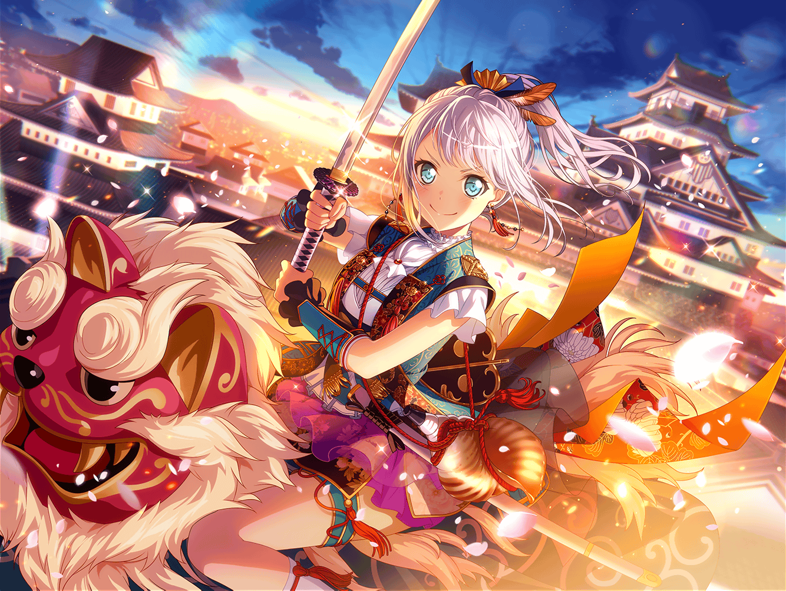

公園
まりな
はー、これで買い出し終わった！
手伝ってくれてありがとうね、{{userName}}さん！
まりな
荷物重いし、この辺で少し休憩しよっか！
まりな
よいしょっと……あー、疲れた！
ホント手伝ってもらわなかったら、絶対に運べなかったよ〜
？？？
ブシドー！
まりな
えっ！
な、なんの声？
イヴ
……あ、マリナさん！
それに{{userName}}さんも！
こんにちは！
まりな
い、イヴちゃんだったんだね……
一体何をしてたの？
イヴ
もちろんブシドーの修行ですよ！
まりな
う、うん。よくわかんないけどそうなんだ……
まりな
それにしても、いきなりブシドーって聞こえたから
何事かと思ったよ～！
イヴ
えへへ、すみません……
修行に集中していて、周りが見えていませんでした！
もっと精進します！
まりな
……あ、そういえばイヴちゃん。
この前イベントで大活躍したんでしょ？
イヴ
だ、大活躍だなんてそんな……
まりな
またまた謙遜しちゃって！
{{userName}}さんもすごいすごいって
ずっと言ってたよ！
まりな
ケンカしてるファンの仲裁をするなんて、
イヴちゃん、勇気あるよね、尊敬しちゃうな！
イヴ
す、すごいなんてとんでもないです。
あの時は怖くて不安でいっぱいでしたから
まりな
そうなの？
イヴ
はい、もしファンの方に気持ちが伝わらなかったら……
ますますケンカが大きくなったら……と思うと心配でした
イヴ
でも、不安な気持ちより、ケンカを止めたい……
仲良くしてほしい、という気持ちの方が大きかったんです
イヴ
自分でも不思議ですけど……
大切なパスパレを守りたいと思ったら、
ココロの奥から勇気がたくさん湧いてきました
まりな
ふふ、それってやっぱり、
イヴちゃんに勇気があるってことじゃない？
イヴ
うーん、どうなんでしょう？
自分ではあまりそんな気がしません
イヴ
どちらかというと、あれは……
パスパレからもらった……勇気だと思っています
イヴ
パスパレというバンドも、
メンバーの皆さんも、ファンの皆さんも、
私にとってはとてもとても大切な宝物です
イヴ
自分の中に大切なものができたからこそ、
気持ちを貫く強さを持てたように思えるんです
まりな
大切なものがあるから、強くなれたってことだね
イヴ
はい！ きっと自分だけでは勇気を持てませんでした
まりな
そっか。でも、そうやって誰かのために頑張れるのって、
すっごくカッコいいことだと思うよ
イヴ
ありがとうございます！
そう言ってもらえると、嬉しいです！
イヴ
でも、まだまだです！
イヴ
最後は、これにて一件落着になりましたけど……
ただ、自分の未熟さもたくさん思い知りました
イヴ
なので、もっともっと修行をして、
ブシのようにパスパレを守れる人になりたいです！
まりな
あはは、それでブシドーって言いながら修行してたんだ！
まりな
大丈夫、イヴちゃんならきっとなれるよ！
イヴ
ファンの皆さんにもそう思ってもらえるように、
これからも修行を頑張ります！
まりな
うん、応援してるよ、イヴちゃん！
イヴ
はい！ ありがとうございます！